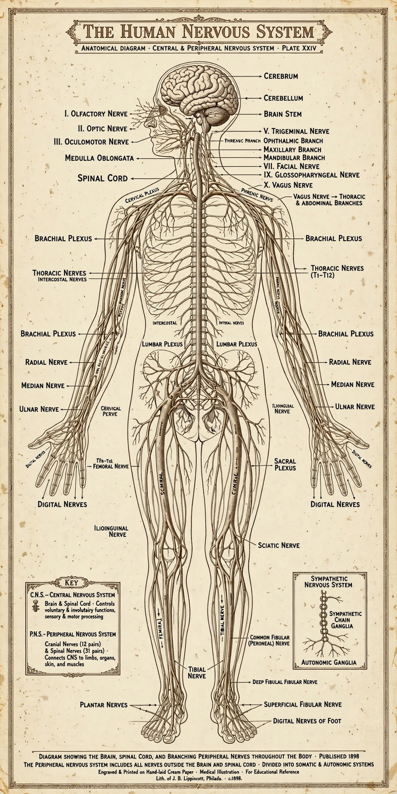

Nervous system
The nervous system is the organ system that coordinates an animal's actions and sensory information by transmitting signals to and from different parts of its body, using networks of neurons and supporting glial cells. In vertebrates it divides into the central nervous system — the brain and spinal cord — and the peripheral nervous system of nerves and ganglia.

Nervous system diagram (image regenerated from memory)
Functionally it splits into the somatic system (voluntary movement and sensation) and the autonomic system (involuntary control of organs, glands and smooth muscle), itself divided into sympathetic ('fight or flight') and parasympathetic ('rest and digest') branches. Together with the endocrine system it maintains homeostasis and produces behaviour.
Signalling
Signals travel as action potentials along axons and cross synapses chiefly by neurotransmitters. Reflex arcs route some responses through the spinal cord alone for speed. Sensory systems feed the brain specialised streams — vision, hearing, touch, taste, smell, balance and proprioception.
Disorders
Damage and disease of the nervous system cause stroke, epilepsy, multiple sclerosis, Parkinson's disease, Alzheimer's disease, peripheral neuropathy and chronic pain, among many others; neurology and neurosurgery are the medical specialties concerned.